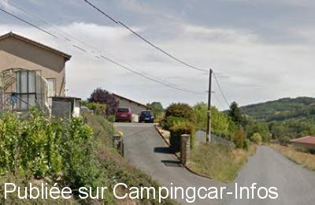

APCC = parkings réservés camping-cars sans services de :
LÉTRA
(N° 199)
Accès/adresse :
La Route
Cave des Vignerons du Doury
69620 LÉTRA
Cave des Vignerons du Doury
69620 LÉTRA
Latitude : (Nord) 45.95624° Décimaux ou 45° 57′ 22′′
Longitude : (Est) 4.52585° Décimaux ou 4° 31′ 33′′
Tarif : Gratuit
Services :


Possibilité de dégustation de Beaujolais
Autres informations :
Ouvert toute l'année
Tel : +33 (0) 474 713 052

Le 07/02/2016 par Aire de Létra
Aucun commentaire pour le moment